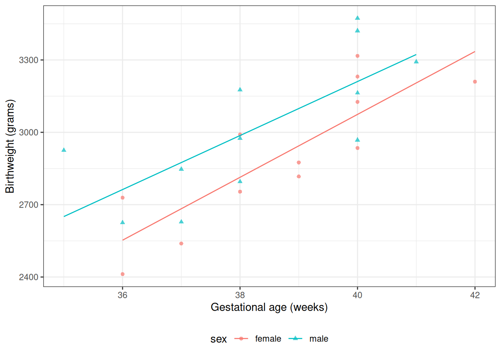
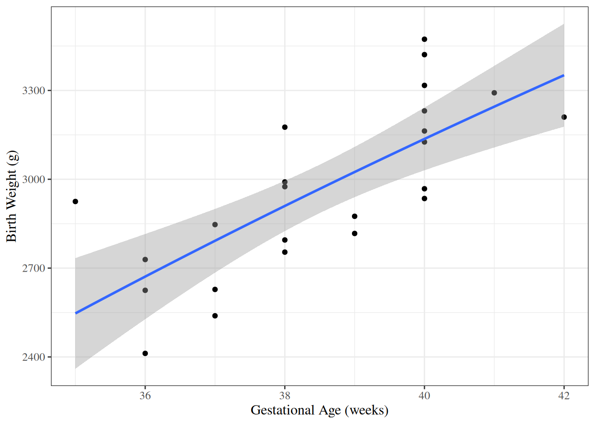

Applied Linear Regression by Sanford Weisberg (Weisberg 2005)
For more recommendations, see the discussion on Reddit.
2.1 Overview
2.1.1 Why this course includes linear regression
This course is about generalized linear models (for non-Gaussian outcomes)
UC Davis STA 108 (“Applied Statistical Methods: Regression Analysis”) is a prerequisite for this course, so everyone here should have some understanding of linear regression already.
We will review linear regression to:
make sure everyone is caught up
to provide an epidemiological perspective on model interpretation.
2.1.2 Chapter overview
Section 2.2: how to interpret linear regression models
Section 2.3: how to estimate linear regression models
?sec-infer-LMs: how to quantify uncertainty about our estimates
?sec-diagnose-LMs: how to tell if your model is insufficiently complex
2.2 Understanding Gaussian Linear Regression Models
2.2.1 Motivating example: birthweights and gestational age
Suppose we want to learn about the distributions of birthweights (outcome\(Y\)) for (human) babies born at different gestational ages (covariate\(A\)) and with different chromosomal sexes (covariate\(S\)) (Dobson and Barnett (2018) Example 2.2.2).
plot1<-bw|>ggplot(aes( x =age, y =weight, shape =sex, col =sex))+theme_bw()+xlab("Gestational age (weeks)")+ylab("Birthweight (grams)")+theme(legend.position ="bottom")+# expand_limits(y = 0, x = 0) +geom_point(alpha =.7)print(plot1+facet_wrap(~sex))
Figure 2.1: birthweight data (Dobson and Barnett (2018) Example 2.2.2)
Data notation
Let’s define some notation to represent this data:
\(Y\): birthweight (measured in grams)
\(S\): chromosomal sex: “male” (XY) or “female” (XX)
\(A\): estimated gestational age at birth (measured in weeks).
Female is the reference level for the categorical variable \(S\) (chromosomal sex) and corresponding indicator variable \(M\) . The choice of a reference level is arbitrary and does not limit what we can do with the resulting model; it only makes it more computationally convenient to make inferences about comparisons involving that reference group.
\(M\) and \(F\) are called dummy variables; together, they are a numeric representation of the categorical variable \(S\). Dummy variables with values 0 and 1 are also called indicator variables. There are other ways to construct dummy variables, such as using the values -1 and 1 (see Dobson and Barnett (2018) §2.4 for details).
We don’t have enough data to model the distribution of birth weight separately for each combination of gestational age and sex, so let’s instead consider a (relatively) simple model for how that distribution varies with gestational age and sex:
\[
\begin{aligned}
Y|M,A &\ \sim_{\text{iid}}\ N(\mu(M,A), \sigma^2)\\
\mu(m,a) &= \beta_0 + \beta_M m + \beta_A a
\end{aligned}
\tag{2.1}\]
Table 2.3 shows the parameter estimates from R. Figure 2.2 shows the estimated model, superimposed on the data.
Show R code
bw_lm1<-lm( formula =weight~sex+age, data =bw)library(parameters)bw_lm1|>parameters::parameters()|>parameters::print_md( include_reference =include_reference_lines, select ="{estimate}")
Table 2.3: Regression parameter estimates for Model 2.1 of birthweight data
pred_female<-coef(bw_lm1)["(Intercept)"]+coef(bw_lm1)["age"]*36### or using built-in prediction:pred_female_alt<-predict(bw_lm1, newdata =tibble(sex ="female", age =36))
Note that age doesn’t show up in this difference: in other words, according to this model, the difference between females and males with the same gestational age is the same for every age.
That’s an assumption of the model; it’s built-in to the parametric structure, even before we plug in the estimated values of those parameters.
\(\beta_A\) is the slope of mean birthweight with respect to gestational age, adjusting for sex.
Or we can plug in the definition of slope:
\[\beta_A = E[Y|M = m, A = a+1] - E[Y|M = m, A = a]\]
Exchangeability and consistency have not been assessed; so we are not discussing potential outcomes (causality), only observed outcomes.
Exercise 2.5 What is the interpretation of \(\beta_M\) in Model 2.1?
Solution.
More precisely written: \[
\mathbb{E}\left[Y|M=m,A=a\right] = \mu(m,a) = \bigg\{
\begin{matrix}
\beta_0 + \beta_M m +\beta_A a, & \text{for } m\in \left\{0,1\right\} \\
\text{undefined}, & \text{for } m \notin \left\{0,1\right\}
\end{matrix}
\] The model is undefined for \(m \notin \left\{0,1\right\}\), so the derivative with respect to \(m\) doesn’t exist.
Figure 2.3: Birthweight model with interaction term

Now we can see that the lines aren’t parallel.
Here’s another way we could rewrite this model (by collecting terms involving \(S\)):
\[
E[Y|M,A] = \beta_0 + \beta_M M+ (\beta_A + \beta_{AM} M) A
\]
If you want to understand a coefficient in a model with interactions, collect terms for the corresponding variable, and you will see which other covariates interact with the variable whose coefficient you are interested in. In this case, the coefficient \(S\) is interacting with \(A\). So the slope of \(Y\) with respect to \(A\) depends on the value of \(M\). According to this model, there is no such thing as “the slope of birthweight with respect to age”. There are two slopes, one for each sex. We can only talk about “the slope of birthweight with respect to age among males” and “the slope of birthweight with respect to age among females”. Then: each non-interaction slope coefficient is the difference in means per unit difference in its corresponding variable, when all interacting variables are set to 0.
To learn what this model is assuming, let’s plug in a few values.
Exercise 2.7 According to this model, what’s the mean birthweight for a female born at 36 weeks?
Note that age now does show up in the difference: in other words, according to this model, the difference in mean birthweights between females and males with the same gestational age can vary by gestational age.
That’s how the lines in the graph ended up non-parallel.
Coefficient Interpretation
Exercise 2.10 What is the interpretation of \(\beta_{M}\) in Model 2.2?
Solution.
Mean birthweight among males with gestational age 0 weeks: \[
\begin{aligned}
\mu(1,0) &= \mathbb{E}\left[Y|M = 1,A = 0\right]\\
&= \beta_0 + {\color{red}\beta_M} \cdot 1 + \beta_A \cdot 0 + \beta_{AM}\cdot 1 \cdot 0\\
&= \beta_0 + {\color{red}\beta_M}
\end{aligned}
\] Mean birthweight among females with gestational age 0 weeks: \[
\begin{aligned}
\mu(0,0) &= \mathbb{E}\left[Y|M = 0,A = 0\right]\\
&= \beta_0 + {\color{red}\beta_M} \cdot 0 + \beta_A \cdot 0 + \beta_{AM}\cdot 0 \cdot 0\\
&= \beta_0
\end{aligned}
\]
\[
\begin{aligned}
\beta_{M} &= \mu(1,0) - \mu(0,0) \\
&= \mathbb{E}\left[Y|M = 1,A = 0\right] - \mathbb{E}\left[Y|M = 0,A = 0\right]
\end{aligned}
\]\(\beta_M\) is the difference in mean birthweight between males with gestational age 0 weeks and females with gestational age 0 weeks.
Exercise 2.11 What is the interpretation of \(\beta_{AM}\) in Model 2.2?
\[
\mathbb{E}\left[Y|A=a, S=s\right] =
\beta_0 + \beta_A a + \beta_M m + \beta_{AM} (a \cdot m)
\]
In the stratified model, the intercept term \(\beta_0\) has been relabeled as \(\beta_F\).
Show R code
bw_lm2<-lm(weight~sex+age+sex:age, data =bw)bw_lm2|>parameters()|>print_md( include_reference =include_reference_lines, select ="{estimate}")
Table 2.6: Birthweight model with interaction term
Parameter
Estimate
(Intercept)
-2141.67
sex (male)
872.99
age
130.40
sex (male) × age
-18.42
Show R code
bw_lm_strat<-bw|>lm( formula =weight~sex+sex:age-1, data =_)bw_lm_strat|>parameters()|>print_md( select ="{estimate}")
Table 2.7: Birthweight model - stratified betas
Parameter
Estimate
sex (female)
-2141.67
sex (male)
-1268.67
sex (female) × age
130.40
sex (male) × age
111.98
2.2.6 Curved-line regression
If we transform some of our covariates (\(X\)s) and plot the resulting model on the original covariate scale, we end up with curved regression lines:
Show R code
bw_lm3<-lm(weight~sex:log(age)-1, data =bw)ggbw<-bw|>ggplot(aes(x =age, y =weight))+geom_point()+xlab("Gestational Age (weeks)")+ylab("Birth Weight (g)")ggbw2<-ggbw+stat_smooth( method ="lm", formula =y~log(x), geom ="smooth")+xlab("Gestational Age (weeks)")+ylab("Birth Weight (g)")ggbw2|>print()
Figure 2.4: birthweight model with age entering on log scale

Below is an example with a slightly more obvious curve.
Vittinghoff, Eric, David V Glidden, Stephen C Shiboski, and Charles E McCulloch. 2012. Regression Methods in Biostatistics: Linear, Logistic, Survival, and Repeated Measures Models. 2nd ed. Springer. https://doi.org/10.1007/978-1-4614-1353-0.
Weisberg, Sanford. 2005. Applied Linear Regression. Vol. 528. John Wiley & Sons.
\(M\) is implicitly a deterministic function of \(S\)↩︎
\(F\) is implicitly a deterministic function of \(S\)↩︎